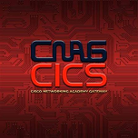
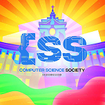
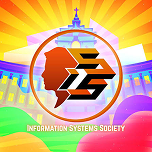

Asst. Prof. Christopher D. Ladios, MSCS
DeanRev. Fr. Gaspar Sigaya, O.P.
RegentAssoc. Prof. Perla P. Cosme, MSCS
Assistant Dean
Inst. Edmund D. Tuzay, MSCS
College Secretary
Center of Development (COD) The Commission on Higher Education (CHED) formally recognizes UST CICS as a Center of Development for its Computer Science, Information Systems, and Information Technology degree programs.
Read more →
UST CICS faculty members and student leaders participate in industry alignment meetings to advance educational benchmarks in cutting-edge computing laboratories.
Read more →
The College hosts academic conferences and networking engagements, providing technical leadership and strengthening student innovation.
Read more →
ST. VINCENT FERRER
FEAST DAY: APRIL 5St. Vincent Ferrer, a Dominican friar renowned for his intellectual brilliance, compelling preaching, and role as an apostle of truth, serves as the spiritual patron of the College of Information and Computing Sciences. His dedication to clear communication, truth, and intellectual rigor guides CICS students in applying technology with integrity, moral discernment, and purpose.